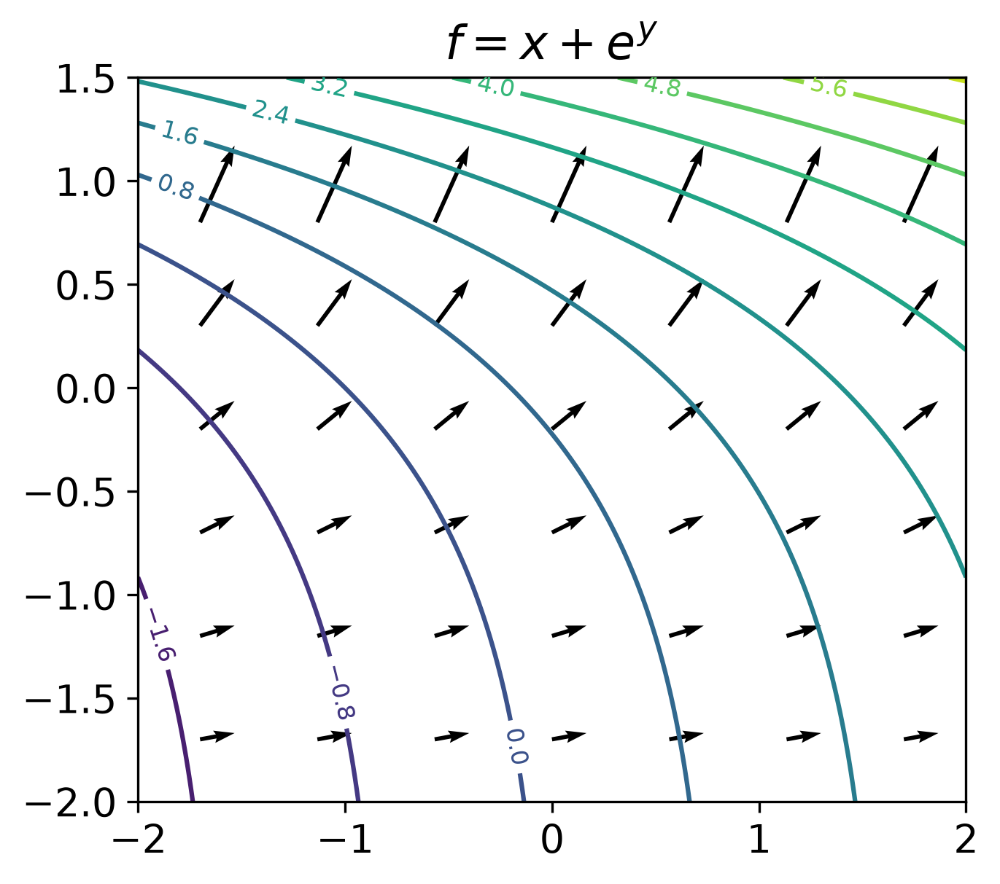
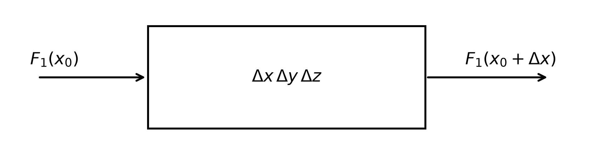
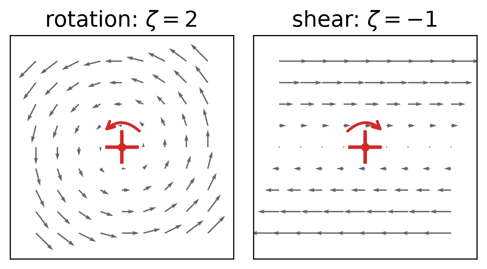
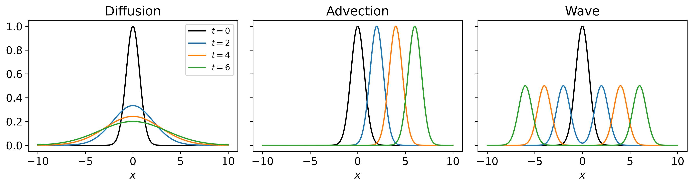

Prognostic Modelling (pea700) · Lecture 2
Classify before you compute: the type of an equation decides which numerical methods work.
Derivatives
Vectors
\[ \vec v = v_1 \vec i + v_2 \vec j + v_3 \vec k \]
\[ \nabla f = \frac{\partial f}{\partial x} \vec i + \frac{\partial f}{\partial y} \vec j + \frac{\partial f}{\partial z} \vec k \]
Gradients drive fluxes: heat, groundwater, wind.

Outflow per volume, geometric:
\[ \nabla \cdot \vec F = \lim_{V \to 0} \frac{1}{V} \oint_S \vec F \cdot \mathrm{d}\vec A \]
Cartesian:
\[ \nabla \cdot \vec F = \frac{\partial F_1}{\partial x} + \frac{\partial F_2}{\partial y} + \frac{\partial F_3}{\partial z} \]
Why are they the same?

Flux through the two faces normal to \(x\) (outward normals \(-\vec i\) and \(+\vec i\)):
\[ \big[ F_1(x_0 + \Delta x) - F_1(x_0) \big] \Delta y \, \Delta z = \frac{F_1(x_0 + \Delta x) - F_1(x_0)}{\Delta x} \, \Delta x \, \Delta y \, \Delta z \approx \frac{\partial F_1}{\partial x} \, V \]
Same for \(y\) and \(z\); divide by \(V\). This is exactly what the finite volume method does.
Product rule
\[ \nabla \cdot (g \vec F) = g \, \nabla \cdot \vec F + \vec F \cdot \nabla g \]
Divergence theorem (Gauss)
\[ \int_V \nabla \cdot \vec F \, \mathrm{d}V = \oint_S \vec F \cdot \mathrm{d}\vec A \]
What flows out through the surface equals the sum of the sources inside.
Curl \(\nabla \times \vec F\): local rotation. Vertical component for a horizontal wind is the relative vorticity
\[ \zeta = \frac{\partial v}{\partial x} - \frac{\partial u}{\partial y} \]
A paddle wheel in the flow spins with \(\zeta/2\), anticlockwise for \(\zeta > 0\).
Shear has vorticity, even with straight streamlines.

Laplacian: divergence of the gradient
\[ \nabla^2 f = \nabla \cdot (\nabla f) = \frac{\partial^2 f}{\partial x^2} + \frac{\partial^2 f}{\partial y^2} + \frac{\partial^2 f}{\partial z^2} \]
Compares \(f\) with the average of its neighbourhood: \(\nabla^2 f < 0\) at a maximum. It appears in every equation that smooths.
\(u\): density of the conserved quantity, \(\vec F\): its flux, \(s\): sources
\[ \frac{\mathrm{d}}{\mathrm{d}t} \int_V u \, \mathrm{d}V = - \oint_S \vec F \cdot \mathrm{d}\vec A + \int_V s \, \mathrm{d}V \]
\[ \boxed{\frac{\partial u}{\partial t} + \nabla \cdot \vec F = s} \]
Advective flux: carried by the flow
\[ \vec F = \vec v \, u \]
Diffusive flux: down the gradient
\[ \vec F = -D \, \nabla u \]
| Law | Flux | Driven by |
|---|---|---|
| Fourier | heat | temperature gradient |
| Fick | dissolved substance | concentration gradient |
| Darcy | groundwater | gradient of hydraulic head |
Insert \(\vec F = \vec v \, u - D \, \nabla u\) into \(\partial u/\partial t + \nabla \cdot \vec F = s\):
\[ \frac{\partial u}{\partial t} + \nabla \cdot (\vec v \, u) \underbrace{- \nabla \cdot (D \, \nabla u)}_{\text{from } -D \nabla u} = s \quad \Longrightarrow \quad \boxed{\frac{\partial u}{\partial t} + \nabla \cdot (\vec v \, u) = \nabla \cdot (D \, \nabla u) + s} \]
Two minus signs cancel: outward normal (outflow reduces \(u\)) and flux law (down the gradient).
Sign errors run, but give wrong results. Conventions differ:
normal inward or outward · \(z\) up or down · \(-\nabla^2 u = f\) or \(\nabla^2 u = f\) · source or sink
\[ \nabla \cdot (\vec v u) = \vec v \cdot \nabla u + u \, \nabla \cdot \vec v \]
For incompressible flow, \(\nabla \cdot \vec v = 0\):
\[ \underbrace{\frac{\partial u}{\partial t} + \nabla \cdot (\vec v u) = \dots}_{\text{flux form}} \qquad \Longleftrightarrow \qquad \underbrace{\frac{\partial u}{\partial t} + \vec v \cdot \nabla u = \dots}_{\text{advective form}} \]
Mathematically equivalent, numerically not: only a discretization of the flux form conserves the total amount exactly. What leaves one cell enters its neighbour.
Every ODE of order \(n\) is a system of \(n\) first-order ODEs. Newton:
\[ m \frac{\mathrm{d}^2 u}{\mathrm{d}t^2} = F \qquad \Longrightarrow \qquad \frac{\mathrm{d}u}{\mathrm{d}t} = v, \quad \frac{\mathrm{d}v}{\mathrm{d}t} = \frac{F}{m} \]
ODE software is written for first-order systems.
Think first: order and linearity?
| Equation | Order | Linear? |
|---|---|---|
| \(y' - 2 x y = e^{x}\) | 1 | yes |
| \(y'' + 4 y' + 4 y = 0\) | 2 | yes, homogeneous |
| \(y' = x / y\) | 1 | no |
| \(y'' + \sin y = x^2\) | 2 | no |
| \(u_t + c(x) \, u_x = 0\) | 1 | yes, despite variable \(c(x)\) |
| \(u_t + u \, u_x = 0\) | 1 | no: the velocity advects itself |
Linear: superposition, wave-by-wave analysis, linear algebraic systems. Nonlinear: iteration (Newton).
\[ a \, u_{xx} + 2 b \, u_{xy} + c \, u_{yy} + \text{lower-order terms} = f \]
| Type | Condition | Prototype | Eigenvalues of \(\begin{pmatrix} a & b \\ b & c \end{pmatrix}\) |
|---|---|---|---|
| Elliptic | \(b^2 - ac < 0\) | Poisson \(u_{xx} + u_{yy} = f\) | same sign |
| Parabolic | \(b^2 - ac = 0\) | diffusion \(u_t = D u_{xx}\) | one is zero |
| Hyperbolic | \(b^2 - ac > 0\) | wave \(u_{tt} = c^2 u_{xx}\) | opposite signs |
Check: diffusion \(u_t - D u_{xx} = 0\) in \((x, t)\)?
\(a = -D\), \(b = c = 0\): \(b^2 - ac = 0\), parabolic. Wave: \(a = -c_0^2\), \(c = 1\): \(b^2 - ac = c_0^2 > 0\), hyperbolic.
\[ \underbrace{\frac{\partial u}{\partial t} = D \frac{\partial^2 u}{\partial x^2}}_{\text{diffusion: parabolic}} \qquad \underbrace{\frac{\partial u}{\partial t} + c \frac{\partial u}{\partial x} = 0}_{\text{advection: hyperbolic}} \qquad \underbrace{\frac{\partial^2 u}{\partial t^2} = c^2 \frac{\partial^2 u}{\partial x^2}}_{\text{wave: hyperbolic}} \]
Exact solutions for \(u(x, 0) = f(x)\):

Diffusion smooths and has no direction. Advection and waves transport with finite speed and keep the shape. Numerical methods must not smear or distort a travelling signal: the harder requirement.
\(\partial u / \partial t = 0\) in the diffusion equation with a source; elliptic:
\[ -\nabla^2 u = f \qquad (\text{Laplace equation for } f = 0) \]
Equilibria: steady temperature and groundwater fields, gravitational potential, pressure in an incompressible fluid.
| Elliptic | Parabolic | Hyperbolic | |
|---|---|---|---|
| Describes | equilibrium | smoothing | propagation |
| A disturbance is felt | everywhere at once | everywhere, damped | only where the wave has arrived |
| Solution is | smoother than the data | smoother than the initial state | as rough as the initial state |
| Needs | BCs on the whole boundary | IC and BCs | ICs; BCs where information enters |
| Numerical task | one large linear system | time stepping, often implicit | time stepping, respect the speed |
\[ \frac{\partial h}{\partial t} + \frac{\partial (h u)}{\partial x} = 0, \qquad \frac{\partial u}{\partial t} + u \frac{\partial u}{\partial x} + g \frac{\partial h}{\partial x} = 0 \]
Linearize about rest, \(h = H + \eta\), small \(\eta\) and \(u\):
\[ \frac{\partial \eta}{\partial t} + H \frac{\partial u}{\partial x} = 0, \qquad \frac{\partial u}{\partial t} + g \frac{\partial \eta}{\partial x} = 0 \]
\(\partial_t\) of the first, \(\partial_x\) of the second, eliminate \(u\):
\[ \frac{\partial^2 \eta}{\partial t^2} = g H \frac{\partial^2 \eta}{\partial x^2} \qquad \Longrightarrow \qquad \text{gravity waves with } c = \sqrt{gH} \]
Ocean depth 4 km: \(c \approx 200\) m/s, a tsunami. A hyperbolic system; with rotation the test bed for weather and climate model numerics.
Advection \(u_t + c u_x = 0\): information travels along \(x - ct = \text{const}\) (characteristics): hyperbolic.
\[ \frac{\partial \vec q}{\partial t} + B \frac{\partial \vec q}{\partial x} = 0 \qquad \text{hyperbolic if } B \text{ has real eigenvalues} \]
(and a full set of eigenvectors): then it splits into advection equations, one per eigenvalue.
Linear shallow water, \(\vec q = (\eta, u)^T\):
\[ B = \begin{pmatrix} 0 & H \\ g & 0 \end{pmatrix}, \qquad \det(B - \lambda I) = \lambda^2 - gH = 0 \;\Rightarrow\; \lambda = \pm \sqrt{gH} \]
The eigenvalues are the wave speeds. Full equations: \(u \pm \sqrt{gh}\).
Real models mix types: advection–diffusion is formally parabolic but behaves hyperbolically when advection dominates.
Primitive equations: momentum, mass, energy of a stratified fluid on the rotating sphere; each an advection equation with sources (pressure gradient, Coriolis, heating, phase changes): dominated by hyperbolic behaviour.
Groundwater: mass + Darcy, a diffusion equation (parabolic; elliptic in steady state) with \(K\) varying over orders of magnitude
\[ S_s \frac{\partial h}{\partial t} = \nabla \cdot (K \nabla h) + q \]
Richards equation: unsaturated soil, coefficients depend on the solution: nonlinear and parabolic
\[ \frac{\partial \theta(\psi)}{\partial t} = \nabla \cdot \left[ K(\psi) \, \nabla(\psi + z) \right] \]
Momentum + Hooke’s law for a shear wave (velocity \(v\), stress \(\sigma\)):
\[ \rho \frac{\partial v}{\partial t} = \frac{\partial \sigma}{\partial x}, \qquad \frac{\partial \sigma}{\partial t} = \mu \frac{\partial v}{\partial x} \]
\(\partial_t\) of the first, insert the second:
\[ \rho \frac{\partial^2 v}{\partial t^2} = \frac{\partial}{\partial x} \frac{\partial \sigma}{\partial t} = \mu \frac{\partial^2 v}{\partial x^2} \qquad \Longrightarrow \qquad c = \sqrt{\mu / \rho} \]
Same structure as shallow water: two first-order equations for two variables that drive each other.
Initial conditions: as many as the order in time (diffusion: \(u(x, 0)\); wave: \(u\) and \(u_t\))
| Type | Condition | Meaning | Example |
|---|---|---|---|
| Dirichlet | \(u = g\) | value prescribed | fixed temperature, lake level at an aquifer |
| Neumann | \(\partial u / \partial n = g\) | flux prescribed | insulated wall, impermeable layer (\(g = 0\)) |
| Robin | \(\partial u / \partial n + \alpha u = g\) | flux depends on value | heat exchange with the air |
Periodic: \(u(0) = u(L)\), exact on a latitude circle. Open boundaries of limited-area models: waves must leave without reflection.
Well-posed is not the same as predictable: the atmosphere is well-posed, yet forecasts lose skill after about two weeks.
Prognostic Modelling (pea700) · WiSe 2026/27